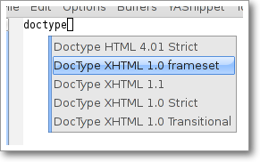

Contents
Some stuff
File content
A file defining a snippet may just contain the template for the snippet. Optionally it can also contains some meta data for the snippet as well as comments.
Generally speaking, if the file contains a line of # --, then all contents above that line are considered as meta data and comments; below are template. Or else the whole file content is considered as the template.
Here's a typical example:
#contributor : pluskid <pluskid@gmail.com>
#name : __...__
# --
__${init}__
Meta data are specified in the syntax of
#data-name : data value
Any other text above # -- is considered as comment and ignored. Here's a list of currently supported meta data:

- name: The name of the snippet. This is a one-line description of the snippet. It will be displayed in the menu. So it's a good idea to select a descriptive name fo a snippet -- especially distinguishable among similar snippets.
- contributor: The contributor of the snippet.
- condition: The condition of the snippet. This is a piece of elisp code. If a snippet has a condition, then it will only be expanded when the condition code evaluate to some non-nil value.
- key: The key to expand the snippet. Sometimes the key of a snippet is non-ASCII or not valid filename (e.g. contains /). One can then define the key property which will overwrite the filename as the key to expand the snippet.
- group: The snippets for a mode can be grouped. Grouped snippets will be grouped in sub-menu. This is useful if one has too many snippets for a mode which will make the menu too long. group property only affect menu construction (See Organizing snippets). Refer to the snippets for ruby-mode for examples. Group can also be nested, e.g. control structure.loops tells that the snippet is under the loops group which is under the control structure group.
The strategy to select a snippet
When user press the yas/trigger-key, YASnippet try to find a proper snippet to expand. The strategy to find such a snippet is explained here.
Finding the key
YASnippet search from current point backward trying to find the snippet to be expanded. The default searching strategy is quite powerful. For example, in c-mode, "bar", "foo_bar", "#foo_bar" can all be recognized as a template key. Further more, the searching is in that order. In other words, if "bar" is found to be a key to some valid snippet, then "foo_bar" and "#foobar" won't be searched.
However, this strategy can also be customized easily from the yas/key-syntaxes variable. It is a list of syntax rules, the default value is ("w" "w_" "w_." "^ "). Which means search the following thing until found one:
- a word.
- a symbol. In lisp, - and ? can all be part of a symbol.
- a sequence of characters of either word, symbol or punctuation.
- a sequence of characters of non-whitespace characters.
But you'd better keep the default value unless you understand what Emacs's syntax rule mean.
The condition system
I write forked snippet.el to make the smart-snippet.el. I call it smart-snippet because a condition can be attached to a snippet. This is really a good idea. However, writing condition for a snippet usually needs good elisp and Emacs knowledge, so it is strange to many user.
Later I write YASnippet and persuade people to use it instead of smart-snippet.el. However, some user still love smart-snippet because it is smart. So I make YASnippet smart. Even smarter than smart-snippet.el. :p
Consider this scenario: you are an old Emacs hacker. You like the abbrev-way and set yas/trigger-key to (kbd "SPC"). However, you don't want if to be expanded as a snippet when you are typing in a comment block or a string (e.g. in python-mode).
It's OK, just specify the condition for if to be (not (python-in-string/comment)). But how about while, for, etc. ? Writing the same condition for all the snippets is just boring. So YASnippet introduce a buffer local variable yas/buffer-local-condition. You can set this variable to (not (python-in-string/comment)) in python-mode-hook. There's no way to do this in smart-snippet.el!
Then, what if you really want some snippet even in comment? This is also possible! But let's stop telling the story and look at the rules:
- If yas/buffer-local-condition evaluate to nil, snippet won't be expanded.
- If it evaluate to the a cons cell where the car is the symbol
require-snippet-condition and the cdr is a symbol (let's
call it requirement):
- If the snippet has no condition, then it won't be expanded.
- If the snippet has a condition but evaluate to nil or error occured during evaluation, it won't be expanded.
- If the snippet has a condition that evaluate to non-nil (let's
call it result):
- If requirement is t, the snippet is ready to be expanded.
- If requirement is eq to result, the snippet is ready to be expanded.
- Otherwise the snippet won't be expanded.
- If it evaluate to other non-nil value:
- If the snippet has no condition, or has a condition that evaluate to non-nil, it is ready to be expanded.
- Otherwise, it won't be expanded.
So set yas/buffer-local-condition like this
(add-hook 'python-mode-hook
'(lambda ()
(setq yas/buffer-local-condition
'(if (python-in-string/comment)
'(require-snippet-condition . force-in-comment)
t))))
And specify the condition for a snippet that you're going to expand in comment to be evaluated to the symbol force-in-comment. Then it can be expanded as you expected, while other snippets like if still can't expanded in comment.
Multiple snippet with the same key
There can be multiple snippet bind to the same key. If you define a snippet with a key that is already used, you'll overwrite the original snippet definition. However, you can add a different postfix to the key.
In general, the extension (consider a file name) is ignored when defining a snippet. So def, def.1 and def.mine will all be valid candidates when the key is def.
When there are multiple candidates, YASnippet will let you select one. The UI for selecting multiple candidate can be customized. There're two variable related:
From version 0.6 of YASnippet this has changed significantly. A new customization variable, called yas/prompt-functions defines your preferred method of being prompted for snippets.
You can customize it with M-x customize-variable RET yas/prompt-functions RET. Alternatively you can put in your emacs-file:
(setq yas/prompt-functions '(yas/x-prompt yas/dropdown-prompt))
Currently there are some alternatives solution with YASnippet.
Use the X window system
The function yas/x-prompt can be used to show a popup menu for you to select. This menu will be part of you native window system widget, which means:
- It usually looks beautiful. E.g. when you compile Emacs with gtk support, this menu will be rendered with your gtk theme.
- Emacs have little control over it. E.g. you can't use C-n, C-p to navigate.
- This function can't be used when in a terminal.
Use built-in Emacs selection methods
You can use functions yas/completing-prompt for the classic emacs completion method or yas/ido-prompt for a much nicer looking method. The best way is to try it. This works in a terminal.
Use dropdown-menu.el
The function yas/dropdown-prompt can also be placed in the yas/prompt-functions list.

Originally, only the above two function is available in YASnippet. They are difficult to use -- especially in a terminal. Until later Jaeyoun Chung show me his dropdown-menu.el, I say wow! It's wonderful!
- It works in both window system and terminal.
- It is customizable, you can use C-n, C-p to navigate, q to quite and even press 6 as a shortcut to select the 6th candidate.
So I added yas/dropdown-list-popup-for-template to support dropdown-list.el. And upload dropdown-list.el to YASnippet hompage for an optional download (since Jaeyoun didn't provide a URL).
Then finally, in 0.4.0, I included a copy of the content of dropdown-list.el in yasnippet.el and made it the default way for selecting multiple candidates.
However, the original functions are still there, you can still use this
(setq yas/window-system-popup-function
'yas/x-popup-menu-for-template)
if you prefer a modern UI. :)
The Trigger Key
YASnippet is implemented as a minor-mode (yas/minor-mode). The trigger key yas/trigger-key is defined in yas/minor-mode-map to call yas/expand to try to expand a snippet.
The Minor Mode

When yas/minor-mode is enabled, the trigger key will take effect. The default key is (kbd "TAB"), however, you can freely set it to some other key.
In version 0.5, YASnippet add a hook to after-change-major-mode-hook to enable yas/minor-mode in every buffer. This works fine for most modes, however, some mode doesn't follow the Emacs convention and doens't call this hook. You can either explicitly hook for those mode or just add it to yas/extra-mode-hooks to let YASnippet do it for you:
(require 'yasnippet)
(add-to-list 'yas/extra-mode-hooks
'ruby-mode-hook)
(yas/initialize)
Note that should be put after (require 'yasnippet) and before (yas/initialize). Further more, you may report it to me, I'll add that to the default value.
In version 0.6, just use yas/global-mode to enable YASnippet in all major modes. Or put yas/minor-mode-on in that modes hook. See the FAQ.
The Fallback
If yas/expand failed to find any suitable snippet to expand, it will disable the minor mode temporarily and find if there's any other command bind the yas/trigger-key. If found, the command will be called. Usually this works very well -- when there's a snippet, expand it, otherwise, call whatever command originally bind to the trigger key.
However, you can change this behavior by customizing the yas/fallback-behavior variable. If you set this variable to 'return-nil, it will return nil instead of trying to call the original command when no snippet is found. This is useful when you would like YASnippet to work with other extensions, e.g. hippie-expand. I'm also glad to tell you that integration with hippie-expand is already included in YASnippet.
Integration with hippie-expand
To integrate with hippie-expand, just put yas/hippie-try-expand in hippie-expand-try-functions-list. Personally I would like to put in front of the list, but it can be put anywhere you prefer.
Other way to select a snippet
When you use the trigger key (so yas/expand) to expand a snippet, the key for the snippet is deleted before the template for the snippet is inserted.
However, there're other ways to insert a snippet.
yas/insert-snippet
The command M-x yas/insert-snippet lets you insert snippets at point for you current major mode. It prompts you for the snippet key first, and then for a snippet template if more than one template exists for the same key.
The list presented contains the snippets that can be inserted at point, according to the condition system. If you want to see all applicable snippets for the major mode, prefix this command with C-u.
The prompting methods used are again controlled by yas/prompt-functions.
Expanding From Elisp Code
Sometimes you might want to expand a snippet directly by calling a functin from elisp code. You should call yas/expand-snippet instead of yas/expand in this case.
As with expanding from the menubar, condition system and multiple candidates won't exists here. In fact, expanding from menubar has the same effect of evaluating the follow code:
(yas/expand-snippet (point) (point) template)
Where template is the template of a snippet. It is never required to belong to any snippet -- you can even make up it on the fly. The 1st and 2nd parameter defines the region to be deleted after YASnippet inserted the template. It is used by yas/expand to indicate the region of the key. There's usually no need to delete any region when we are expanding a snippet from elisp code, so passing two (point) is fine. Note only (point) will be fine because the 1st parameter also indicate where to insert and expand the template.
Indenting
Many people miss the indenting feature of smart-snippet: when you place a $> in your snippet, an (indent-according-to-mode) will be executed there to indent the line. So you'll not need to hard-code the indenting in the snippet template, and it will be very convenient when you need to work with several different project where coding styles are different.
The reason why this feature wasn't added to YASnippet until after 0.5.6 is that it doesn't work well for all modes. In some cases (e.g. python-mode), calling indent-according-to-mode will break the overlays created by YASnippet.
However, since many people asked for this feature, I finally added this to YASnippet. Here's an example of the usage:
for (${int i = 0}; ${i < 10}; ${++i})
{$>
$0$>
}$>
In 0.6.0 You should not need to use this feature although it's supported for backward compatibility. Just set yas/indent-line to 'auto.